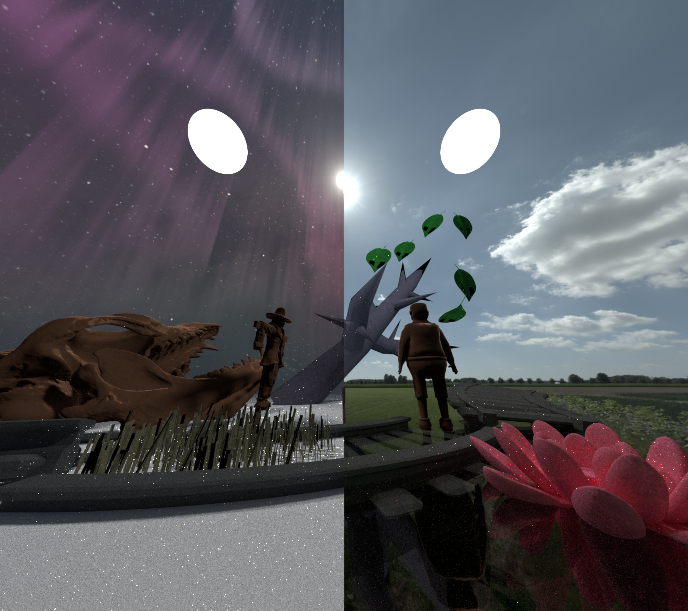

**Project Report**
Student Name/-s: Wu Zhanyi(22-737-266)
# Motivational Image
The left side depicts a winter scene, while the right shows a spring scene, with two characters standing between these two environments. I want to emphasize that our life is always in between two opposite extremes. Keep going, though the path to other side might be broken, but there always is one.
 # Selected Features
ID | Short Name |Points | Features (if required) & Comments
--------|---------------------------|-------|------------------------------------
15.3 | Environment Map Emitter | 15 |
15.4 | Homogeneous Participating Media | 15 |
30.2.1 | Subsurface Scattering | 30 | diffusion dipole
Total || 60 |
## **Final scene**
The background uses environment emitter. I mixed two different exr file together to maximize the difference between the two sides. The skull,scarecrow,boy,leafs use BSSRDF. The boy is standing in the water. The water uses homogeneous medium. Some of objects are modeled by blender.
# Selected Features
ID | Short Name |Points | Features (if required) & Comments
--------|---------------------------|-------|------------------------------------
15.3 | Environment Map Emitter | 15 |
15.4 | Homogeneous Participating Media | 15 |
30.2.1 | Subsurface Scattering | 30 | diffusion dipole
Total || 60 |
## **Final scene**
The background uses environment emitter. I mixed two different exr file together to maximize the difference between the two sides. The skull,scarecrow,boy,leafs use BSSRDF. The boy is standing in the water. The water uses homogeneous medium. Some of objects are modeled by blender.
